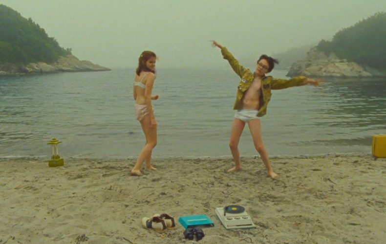

[Critique] "Moonrise Kingdom" : un film d'aventure euphorique
Un film de Jean-Michel Navet
Le dandy texan explore à nouveau son petit monde coloré dans un film d’aventure euphorique.
Si l’on sait une chose de Wes Anderson, c’est qu’il n’appartiendra probablement jamais à la famille des cinéastes-caméléons, ceux dont on mesure l’évolution aux brusques changements (de ton, de forme, de récit) qui innervent leur filmographie.
Le dandy texan serait plutôt du genre obtus, tendance monomaniaque, incapable de filmer la vie souterraine de quelques renards malicieux sans y importer son reliquaire pop ; incapable, aussi, de filmer l’Inde ou un hôtel parisien sans en faire les décors de sa petite collection d’obsessions.
Mais à force de ne jamais dévier d’une formule qui a montré son succès, Wes Anderson s’expose aussi à un procès en paresse et l’on a trop souvent cru distinguer dans ses derniers opus les signes d’un essoufflement prochain.
Moonrise Kingdom, dès son introduction (des plans-séquences qui glissent entre les pièces d’une maison de poupée), menaçait a priori d’être ce film du déclin, tant il redistribue machinalement l’ensemble des motifs du cinéma d’Anderson, du débraillé haute couture des costumes à la perfection plastique de chaque dispositif.
Le récit découvre également des personnages déjà fréquentés par le cinéaste : deux enfants solitaires in love, un jeune scout orphelin et une mini Anna Karina dépressive, qui décident le temps d’un été de fuguer ensemble sur une île au large de La Nouvelle-Angleterre.
Leur disparition soudaine provoquera une suite de petites déflagrations dans leur entourage, rouvrant quelques blessures existentielles chez des parents et tuteurs tous mortifiés (dont le fidèle Bill Murray, la recrue Bruce Willis et un Edward Norton bouleversant en grand dadais aux yeux tristes).
C’est donc encore une histoire de famille (dysfonctionnelle) et d’enfance sacrifiée qu’observe Wes Anderson, mais cette fois-ci sur un mode volontiers mineur et plus buissonnier qui constitue au final la petite réussite du film et sa relative originalité.
Gouverné par le rythme de la course de son jeune couple fugueur, Moonrise Kingdom s’assume en simple objet récréatif, une quête amoureuse palpitante, un geste purement libératoire et fantasmatique sur lequel la réalité n’a aucune prise (pas même la foudre qui s’abat sans dommages sur notre héros joufflu) : une aventure à tout prix.
- Où est-ce que tu vas comme ça ?
- Je vais abattre un arbre.
Dans ce registre, Wes Anderson n’a toujours pas d’équivalent pour filmer l’héroïsme de l’enfance : ces cabanes que l’on érige avec trois bouts de ficelle, cet esprit de meute, ces premiers baisers qui font trembler le sol et ces combats homériques…
Il prolonge au fond le mouvement de Fantastic Mr. Fox, son retour à un état sauvage conjugué à une forme d’euphorie perpétuelle qu’aucun drame ne peut entamer.
On pourra certes regretter la patine tragique de ses premiers films mais au moins reconnaître le panache de l’aventure.
Modifié il y 3 minutes
Bande annonce
Commentaires
Laisser un commentaire
Derniers commentaires
Karine - Il y a 42 minutes
Une très belle histoire d'amour, une photographie juste magnifique, des acteurs exceptionnels une musique superbe et une réalisation intéressante. L'émotion est omniprésente, et je dois l'avouer, mais fais pleurer plusieurs fois :'). Mais malheureusement, certaines scènes inutiles (le mort du chien ???!), et des longueurs empêche le film d'être un chef d'œuvre. Mais sa ne l'empêche pas d'être un excellent film a découvrir très vite pour tous les adeptes de poésie. Je suis conquis. Du grand Wes Anderson